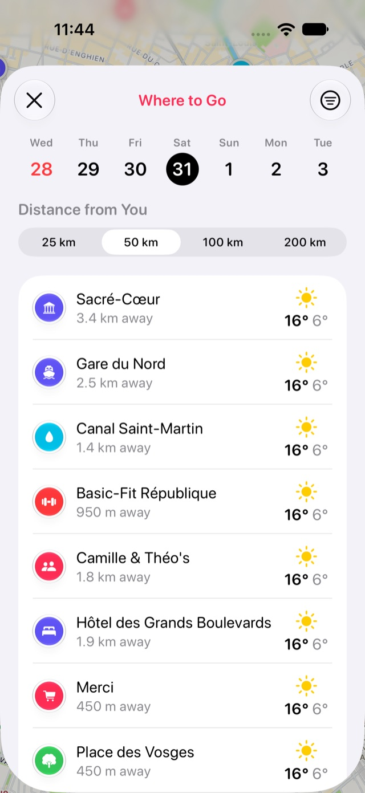

Como descobrir onde o tempo está melhor para um passeio
Escolher entre o lago, a serra e a praia no sábado costuma significar conferir a previsão de cada um, um por um. O Stops organiza tudo para você: escolha o dia, e seus lugares por perto aparecem com o melhor clima primeiro.
- Stops Pro
- Alguns segundos
- iPhone e iPad
Do que você precisa
- Acesso à localização para o Stops, para ele saber o que há por perto.
- Stops Pro.
Passo a passo
-
Abra Aonde ir
Na aba Paradas, toque no botão de clima no topo, ao lado dos botões de filtro e de busca.
O Diário também abre com uma linha Aonde ir: cartões dos lugares que valem um passeio nos próximos dias, pesando o clima, a distância de cada um, os lugares aos quais você sempre volta e os que você salvou mas ainda não visitou. Cada cartão mostra a distância, o motivo de estar ali e a previsão de hoje, ou a de amanhã quando já é tarde da noite. Toque em Ver tudo para a lista completa.
-
Escolha o dia e até onde ir
Toque num dia da semana no topo: começa no próximo sábado. Depois escolha a que distância de você procurar, de 25 a 200 km. Para ver só alguns tipos de lugar, como praias ou trilhas, toque no botão de filtro e marque as categorias. O Stops lembra a distância e o filtro para a próxima vez.

-
Escolha seu destino
Suas paradas dentro dessa distância aparecem com o melhor clima primeiro, cada uma com a previsão do dia. Toque em uma para abri-la e obter rotas.
Bom saber
- Um dia seco, limpo e ameno vem primeiro; chuva, tempestades e dias muito quentes ou frios fazem o lugar descer na lista.
- As previsões vêm do app Tempo da Apple.
Mais guias
Baixe o Stops
Todo lugar que vale uma parada, no iPhone, iPad, Mac e Apple Watch.